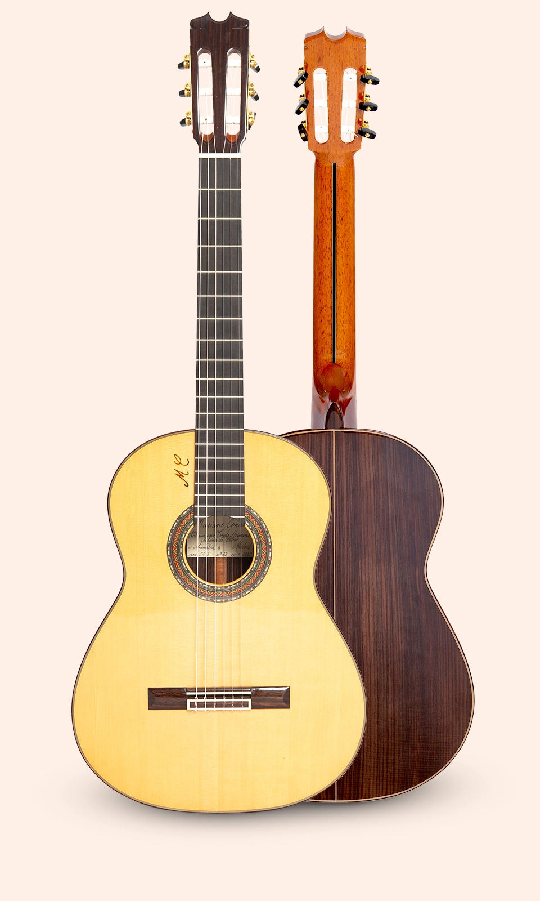
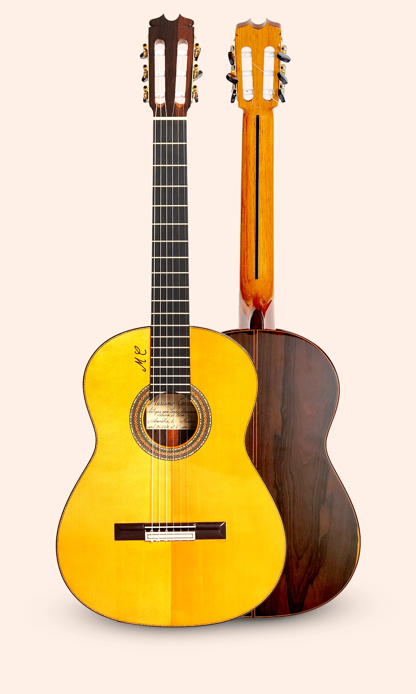

Home/ Classics
The voice
of the guitarclassic.
Classic concert guitars built in Madrid with the same dedication and passion that has characterized us since 1915.
Classical
7 models,
a single hand.
Handcrafted, numbered consecutively, with a half-moon head and initials MC emblazoned on the lid.

Pozuelo classic mahogany
Golden and warm timbre, with a generous projection in the room.
From €4,840
Pozuelo classic palo santo
One of the most unique pieces in the workshop, with great sonorous depth.
From €4,840
EC-1
Classic third with a round tone and comfortable response for recital.
From €6,655
EC-3
Precision and color in all registers, with the traditional construction of the house.
From €9,075
AC-23
Balance between attack and body, designed for a stage race.
From €12,100
AC-23/R
Variant of the AC-23 with a slightly darker sound character.
From €13,310
classic dedication
Built for a specific player, with custom wood decisions.
From €24,200The job
What there is
behind.
Our artisan philosophy
From the first cut of wood to the last polish, each classical concert guitar is a handcrafted work of art. They maintain the essence of the Madrid school and the legendary Conde Hermanos house, with the half-moon head and the initials MC fire-etched on the lid and handwritten labels.
Selection of wood and materials
We personally choose each piece of Indian rosewood, maple, koa or Madagascar for sides and back. For the top we offer German spruce or red cedar: the spruce provides shine and projection, the cedar provides warmth and depth. The neck, usually made of cedar, and the ebony fingerboard guarantee comfort and stability.
Models of classical concert guitars
Pozuelo Classic combines tradition and modernity with a solid spruce top and Indian rosewood or mahogany back and sides. EC-1 and EC-3 stand out for their elegance and versatility. AC-23 and AC-23/R are our high-end gems, with rare woods such as maple, koa or Madagascar.
Sound and sensations
We look for balance, projection and timbral richness: deep bass, crystal clear treble and a dynamic response that allows us to express the full range of emotions of classical music. The action of the strings, the ergonomics of the neck and the balanced weight are taken care of in detail.
Recognition and trajectory
Our guitars have been chosen by great classical music performers and by musicians from all over the world who are looking for a reliable, beautiful instrument with an unmistakable sound.
Personalization and exclusivity
Each guitarist is unique: you can choose woods and finishes, the string pull (650 mm or 664 mm), the type of headstock and details such as the rosette, inspired by the workshop's historical models. All our guitars are numbered and certified.